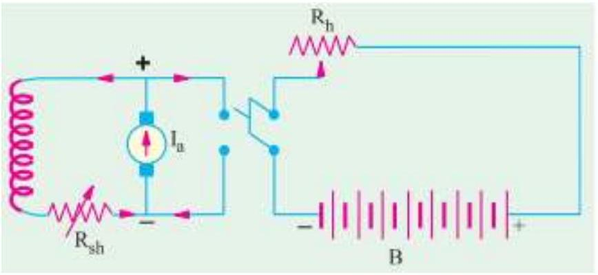
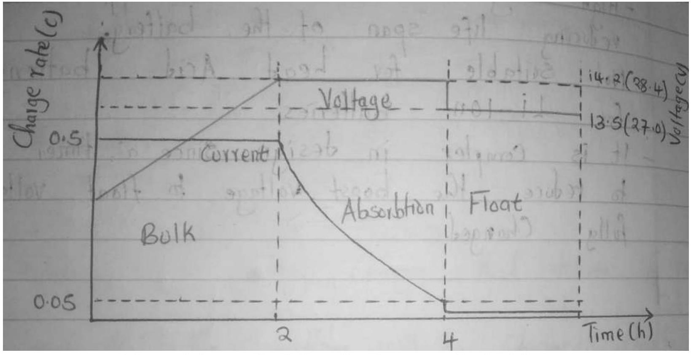

TOPIC 9; BATTERY CHARGING
Objectives
By the end of the topic the learner should be able to: -
i) Explain the constant voltage charging methods
- Constant current charging
- Constant voltage charging
- Float battery charging
- Trickle battery charging
ii) Describe the maintenance of various batteries
- Lead-acid cells
- Alkaline cells
- Zinc air
Battery charging methods
A rechargeable battery, storage battery or secondary cell is a type of electrical battery which can be charged, discharged through a load and recharged many times as opposed to a disposable or primary battery, which is supplied fully charged and discarded after use.
Some of the charging methods includes: -
i. Constant current charging method
ii. Constant voltage charging method
iii. Float charging method
iv. Trickle charging method
v. Booster charging method
vi. Taper charging method
vii. Iui charging method
viii. Burp charging method
ix. Pulsed charging method
1. Constant current charging method
The charging current is kept constant by varying the supply voltage to voltage to overcome the increased back e.m.f of cells. If a charging booster (which is just a shunt dynamo directly driven by a motor) is used, the current supplied by it can be kept constant by adjusting its excitations. If charged on a d.c. supply, the current is controlled by varying the rheostat connected in the circuit. The value of charging current should be chosen appropriately to avoid excessive gassing during final stages of charging. This also maintains the cell temperature not avoid 45 degrees Celsius The method takes comparatively longer time.
Figure 9. 1 constant-current charging system
2. Constant-Voltage charging method
Here voltage is maintained constant but it results in very large charging current in the beginning when the back e.m.f of the cell is low and a small current when their back e.m.f increases on being charged.
When a secondary cell is being charged, then the e.m.f of the cell acts in opposition to the applied voltage. Taking V as the supply voltage and I as the charging voltage against the back e.m.f $E_{b}$, then input is VI but power send in overcoming the opposition is $E_{b} I$. The power $E_{b} I$ is converted into chemical energy which is stored in the cell.
The charging current is then given as: -
Figure 9.2 constant-voltage charging system
Where; - R-Total circuit resistance including the internal resistance of battery
$I$-- changing current
N/B- by varying R, the charging current can be kept constant throughout
3. TRICKLE CHARGING METHOD
A trickle charger is a battery charger that delivers a very low voltage. This means that the battery will be charged slowly over a period of time. In trickle charging method, battery is not connected to the load during charging.
In trickle charging, the charger does not disconnect the battery when fully charged, hence it keeps continuously to maintain the battery fully charged.
Trickle charger charges the battery at the self-discharging rates of the battery.
4. FLOAT CHARGING METHOD
Float charging is a technology and method of maintaining a battery in the charged condition by applying a continuous voltage and current at the minimum level to maintain a full or near full charge.
Float charging is most commonly used for backup and emergency power applications where the discharge of the battery is infrequent. During float charging, the charger, the battery and load are connected in parallel. The charger operates off the normal power supply which provides current to the load during charging and operation.
If normal power supply fails, the battery provides backup power until the normal power supply is restored. Float chargers are typical constant-voltage chargers that operates at a low voltage, less than 2.4 volts per cell, keeps the charging current low and thus minimizes the damaging effects of high-current overcharging.
Float charging versus level of charge
Figure 9.3 a graph of Float charging versus level of charge
Advantages of float charging method
- As the battery, charger and load all are connected in parallel so that it is best for backup and emergency purposes, there is no power interruption for the load.
- As here reduced voltage, a low constant current is used so the battery has a high life span.
- Almost no chances of overcharging, overheating, automatic self-discharge or voltage drain.
- Float charger has a very simple circuit design generally a rectifier circuit and a low-cost device.
Disadvantages of float battery charging
i. Battery takes more time to charge as it's working with low current charger.
ii. Most suitable for low power and low backup time applications, not suitable for high backup time applications.
BOOST CHARGING SYSTEM
- It is a charging method of the battery where a boost voltage (more than float voltage) is applied temporarily to the battery to accept more current as it gets charged fully in a very short time.
- The voltage must be reduced to float voltage once the battery gets fully charged to avoid overcharging.
- Boost charger is mainly designed for fast charging purposes.
ADVANTAGES OF BOOST CHARGING
a) Provides very fast or quick charging method.
b) Most suitable for low to high power application.
c) Battery can drive a heavy load such as high torque motors & actuators.
DISADVANTAGES OF BOOST CHARGING
a) High voltage & current are applied to the battery hence reducing life span of the battery.
b) Not suitable for lead acid batteries hence suitable for LI-ION batteries.
c) It is complex in design since a timer circuit is required to reduce the boost voltage to float voltage when battery is fully charged.
MAINTENANCE OF LEAD CELLS
i. Discharging should not be prolonged after the minimum value of the voltage for the particular rate of discharge is reached.
ii. It should not be left in discharge condition for long period of time.
iii. The level of electrolyte should always be 10 mm to 15 mm above the top of the plates which must not be left exposed to air. Evaporation of electrolyte should be made up by adding distilled water occasionally.
iv. Since acid doesn't vaporize, none should be added.
v. Vent openings in the filling plug should be kept open to prevent gases formed within from building a high pressure.
vi. The acid and corrosion on the battery $\square$ top should be washed off with a cloth moistened with baking soda or ammonia and water.
vii. The battery terminals and metal support should be cleaned down to bare metal and covered with vaseline or petroleum jelly.
MAINTENANCE OF ALKALINE BATTERY
i. Correctly size your battery.
ii. Periodically check the voltage of your batteries.
iii. Don't try to charge alkaline battery.
iv. Prevent alkaline batteries from leaking.
v. Take care with parallel connection.
vi. Give VRLA batteries breathing space.
vii. Always take care to insert batteries correctly according to the designation of polarity on batteries and the equipment. Place batteries correctly into equipment to avoid short-circuit or be charged. This may result to rise in temperature and venting leading to leakage and explosion.
viii. Don't short-circuit batteries. Avoid direct connection of terminals of batteries to avoid excess current flow instantaneously, which leads to heat generation hence damaging internal structures of the battery.
ix. Don't charge batteries, they are not rechargeable, charging may result to leakage of electrolyte or damage.
x. Do not over discharge batteries.
xi. Don't forcibly discharge, when batteries are discharged by an external power supply, the battery voltage becomes extremely low.
xii. Do not dispose batteries into fire $\square$.
xiii. Exhausted batteries should be immediately removed from equipment's and disposed off properly.
xiv. Avoid crush the batteries.
xv. Don't directly solder the batteries.
QUESTIONS
2018 OCT-NOV
3. Explain the following methods of battery charging. (4 mrks)
a) Trickle charging
b) Constant current charging.
4. A battery whose terminal voltage is 12 Vdc and an internal resistance is $0.25 \Omega$ is charged from a 14 V d.c supply. Calculate the charging current. (2 marks)
5. June/July 2013
a) Explain the ammeter-Voltmeter method for high resistance measurement (4 marks)
b) Outline the precautions to be observed while handling an alkaline battery ( 6 marks)
c) With an aid of a well labelled circuit diagram, explain the constant-voltage method of charging a battery. (5 marks)
d) Thirty lead-acid secondary cells are to be charged at constant voltage. The e.m.f of each cell at the beginning and end of charge is 1.9 V and 2.7 V respectively and the internal resistance of each cell is $0.1 \Omega$. Determine the: ( 5 marks)
i. Minimum charging voltage required
ii. Initial charging current
6. s